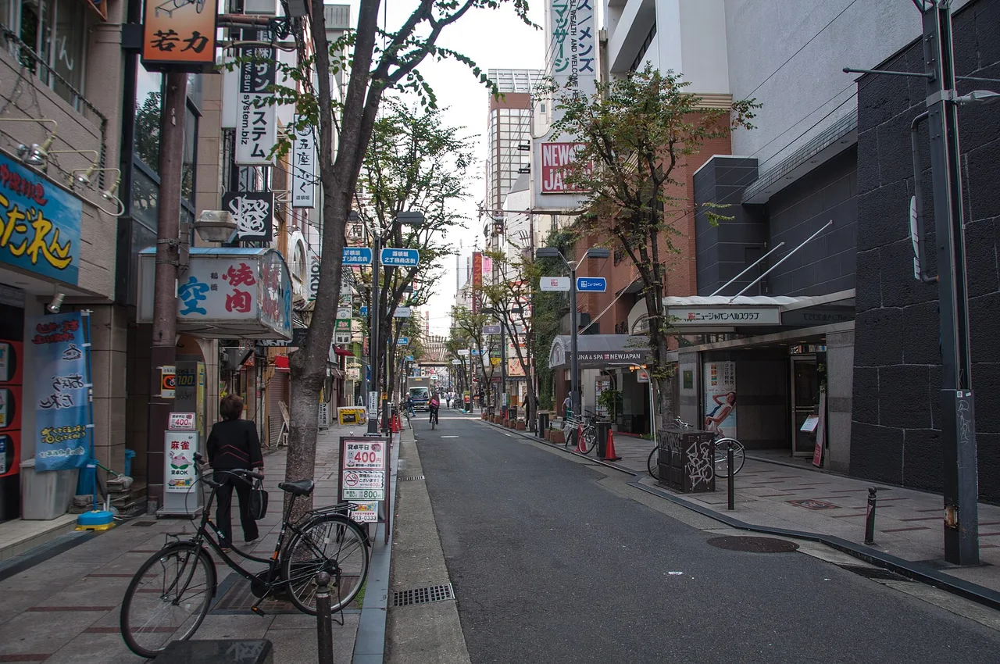
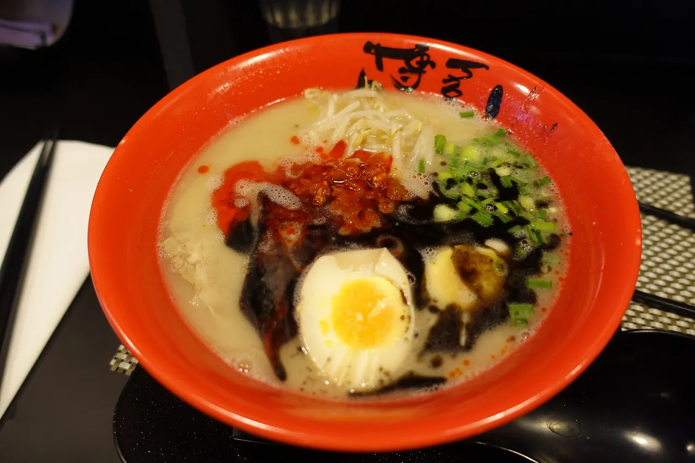

Is Japan Expensive in 2026? An Honest Daily Budget
Short answer: in 2026, Japan is cheaper for most foreign visitors than it has been in years, because the yen is weak against the dollar, euro and pound. You can travel well on about $80–120 a day, or comfortably on $150–250. We have run this budget on our own family trips across all 47 prefectures, and below is what each tier actually buys, where your money goes, and the few things that are still genuinely pricey.

We re-checked these numbers on our last two trips because, with a weak yen, the gap between "Japan is expensive" (what people remember) and what we actually paid kept widening. A bowl of ramen that reads as ¥900 on the menu lands at roughly six dollars once the exchange rate is in the picture. That is the whole story of a 2026 budget, so we will start there.
Not as expensive as its reputation. The weak yen makes 2026 one of the better-value years in over a decade for visitors paying in dollars or euros. Plan on roughly $80–120 a day for budget travel and $150–250 a day mid-range, both excluding flights. Your biggest fixed costs are the international flight and, if you choose them, a rail pass and the ¥4,000 Mount Fuji fee.
Quick answers
Q. Is Japan expensive to visit in 2026?
A. Less than its reputation. For visitors paying in dollars or euros, a trip is in rough terms perhaps 25–30% cheaper than a few years ago, mostly because of the weak yen (our own ballpark, not an official figure), so day-to-day costs (food, trains, attractions) feel moderate. The big-ticket items are your flight and, if you climb it or buy a nationwide rail pass, a few fixed fees.
Q. What is a realistic daily budget for Japan?
A. As a rough guide: budget travel runs about $80–120 a day, mid-range about $150–250 a day, both excluding flights. A 14-day mid-range trip comes to roughly $2,500–4,000 per person before airfare. These are approximate and depend on your city and how you eat and sleep.
Q. How do I keep costs down in Japan?
A. Eat where locals eat: convenience stores (konbini), teishoku set-meal diners, and standing soba and udon counters. Use an IC card and regional rail passes instead of taxis, and stay in business hotels or guesthouses. Lunch sets are far cheaper than the same restaurant's dinner.
Q. What is actually expensive in Japan?
A. Taxis, gift fruit (the famous ¥10,000-plus melons), high-end sushi and kaiseki dinners, and ski-resort or peak-season hotels. None of these are unavoidable, so they only blow your budget if you choose them.
The weak-yen reality
The single fact that shapes a 2026 budget is the exchange rate. The yen sits well below where it was a few years ago, which means a trip is, in rough terms, perhaps 25–30% cheaper than the same trip before the currency weakened, mostly because of the weak yen. That figure is our own ballpark, not an official one: we give it as an approximate range on purpose, because the rate moves every day and we are not going to quote a fake exact number. Check a live converter for today's rate.
What this feels like on the ground: prices in Japan have risen for locals, but for someone paying in a stronger currency, a ¥1,000 lunch, a ¥500 train hop, or a ¥7,000 hotel night still convert to numbers that read as reasonable. Japan has not become a budget backpacker country, and it never was one. It has become noticeably more affordable for inbound travellers than its old reputation suggests.
One thing the weak yen does not discount: international flights, which you pay in your home currency, and the small fixed fees that rose for 2026. We list those dated changes in our 2026 fees, taxes and rules guide so you can add them to the budget below.
Daily budget tiers
Here is how we think about a day, per person, excluding the flight to Japan. Treat the dollar figures as approximate and dependent on city, season and how you travel. Tokyo and Kyoto sit at the top of each range, while smaller cities and rural areas run lower.
| Tier | Per day | What it looks like |
|---|---|---|
| Budget | ~$80–120 | Hostel dorm or capsule / guesthouse, konbini and teishoku meals, IC card and local trains, mostly free or low-cost sights (shrines, parks, neighbourhoods). |
| Mid-range | ~$150–250 | Business hotel or modest ryokan, a sit-down dinner most nights, the occasional Shinkansen leg or paid attraction, a few souvenirs. |
| Comfort | $300+ | Nicer hotels or a ryokan with dinner, taxis when convenient, reserved experiences, no thought given to the bill. |
For planning a full trip, a 14-day mid-range itinerary works out to roughly $2,500–4,000 per person, excluding flights. That is the number we use when friends ask us to sanity-check their trip. Budget travellers running closer to the $80–120 floor can bring two weeks under $2,000 with care; comfort travellers can spend that in four or five days. Build in the fixed extras from the 2026 changes (departure tax, any rail pass, the Mount Fuji fee if you climb) on top.
Estimate your trip in 10 seconds
Excludes international flights. A rough guide; real costs depend on season and choices. Add the fixed 2026 fees from our changes guide.
Where the money goes

On a mid-range day, our spending splits across four buckets. The approximate per-person yen figures below assume a city like Osaka or Fukuoka, which sit a little below Tokyo.
| Bucket | Typical / day | Notes |
|---|---|---|
| Lodging | ¥6,000–14,000 | Business hotel single or twin (per person). Dorms and capsules drop this to ¥3,000–5,000; a ryokan with two meals pushes it well above. |
| Food | ¥2,000–4,500 | Konbini breakfast, a teishoku or noodle lunch, a sit-down dinner. Easy to halve, easy to double. |
| Transport | ¥800–2,500 | Local trains, subway and bus on an IC card. Shinkansen legs and rail passes are separate and lumpy. |
| Attractions | ¥0–3,000 | Temples and gardens often ¥300–600; many shrines, parks and neighbourhoods are free. Big museums and observation decks cost more. |
Lodging is the lever that moves your budget most, then food. Transport inside a city is small money on an IC card; the spiky cost is long-distance rail, which is why we work out whether a pass pays off before each trip. We cover how much yen to actually carry, and where cards still will not work, in our cash-or-card guide for 2026.
The cheap end of eating
Food is where Japan quietly surprises people, because eating well costs little if you eat the way locals do. Three habits keep our food budget low without feeling like sacrifice.
Konbini. The convenience stores (7-Eleven, FamilyMart, Lawson) sell genuinely good rice balls, egg sandwiches, hot meals and coffee for a few hundred yen. A konbini breakfast runs about ¥300–500, and it is a fine lunch too.
Teishoku set meals. A teishoku is a set: a main dish with rice, miso soup and a small side, usually ¥800–1,200 at a casual diner. It is filling, balanced, and the everyday way working Japan eats lunch. Order the lunch set at a place you like and you pay a fraction of what the same kitchen charges at dinner.
Standing soba and udon. The stand-up noodle counters near train stations serve a hot bowl of soba or udon for roughly ¥400–600, ready in two minutes. They are how commuters eat, and they are the cheapest hot meal we know in Japan.
Between those three, two of your three daily meals can cost under ¥1,000 combined, leaving room for one proper dinner. That is the mechanism behind the budget-tier floor.
Some links above are affiliate links. We may earn a commission at no extra cost to you. We only list services we'd use ourselves.
What is genuinely expensive
It would be dishonest to say everything is cheap. A handful of things in Japan really do cost a lot, and knowing which ones lets you avoid the budget surprises.
Taxis. Metering starts around ¥500 and climbs fast. A short hop that would be a few dollars elsewhere can be ¥2,000–3,000 here, and a cross-city ride far more. With the train and subway network as good as it is, we take taxis only late at night or with heavy bags.
Gift fruit. The famous luxury melons, square watermelons and perfect strawberries are real, and they carry gift-level prices: a single melon can run ¥10,000 or more. They are a gifting tradition, so you only pay this if you choose to.
High-end sushi and kaiseki. A counter sushi omakase or a multi-course kaiseki dinner can reach ¥15,000–30,000 per person. The food is extraordinary and worth doing once if it is your thing; just budget it as a deliberate splurge rather than a normal dinner.
THE BUDGET TRAP TO WATCH
The thing that quietly wrecks a budget is not any single luxury, it is taking taxis "just this once" several times a day and eating every dinner at a mid-tier tourist restaurant. Swap two taxi rides for the subway and one tourist dinner for a teishoku place, and a day drops by ¥4,000–6,000 without losing anything you came for.
How we keep the daily number down
These are the moves that reliably lower our daily spend, in rough order of impact.
Stay in business hotels or guesthouses. Clean, small, well-located rooms at ¥6,000–10,000 are everywhere outside peak season. Booking a few weeks ahead helps, and rooms in smaller cities cost less than central Tokyo for the same quality.
Eat lunch at dinner restaurants. The same kitchen often serves a lunch set at half the dinner price. We do our nicer meals at midday and keep evenings to noodles or konbini.
Use an IC card and price your rail. A mobile Suica or ICOCA covers trains, subways and buses, and many konbini purchases. For long distances, work out whether a regional pass beats point-to-point tickets before you buy the nationwide pass, which since 2023 does not always pay off.
Lean on free sights. Shrines, gardens, neighbourhoods, riversides and markets cost little or nothing, and they fill a day without touching the budget.
Two follow-ups worth reading before you book: Cash or card in Japan in 2026 for how much yen to carry, and Japan travel in 2026 for the new fees and taxes to add on top of the budget here.
Some links above are affiliate links. We may earn a commission at no extra cost to you. We only list services we'd use ourselves.
Japan National Tourism Organization (JNTO) — official travel planning and practical information
Japan Tourism Agency — Consumption Trend Survey for International Visitors to Japan — visitor spending data (context)